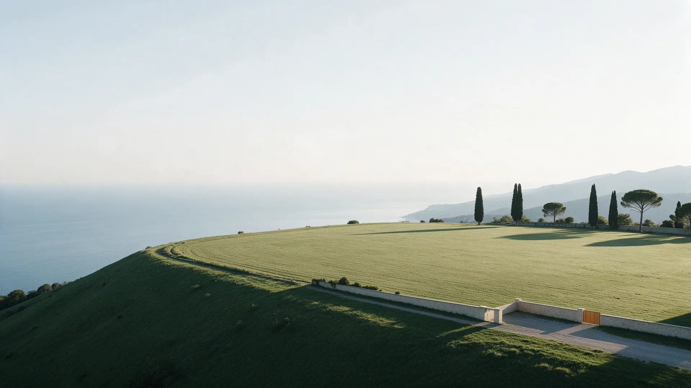
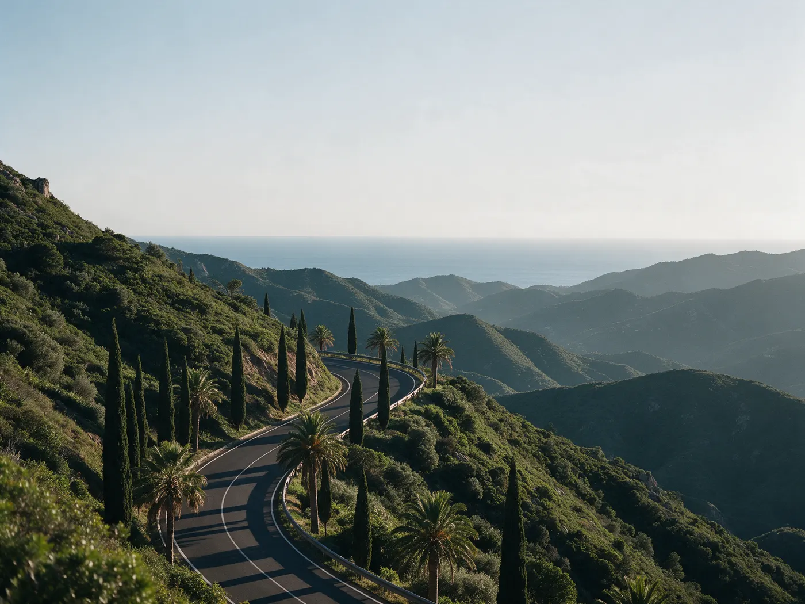
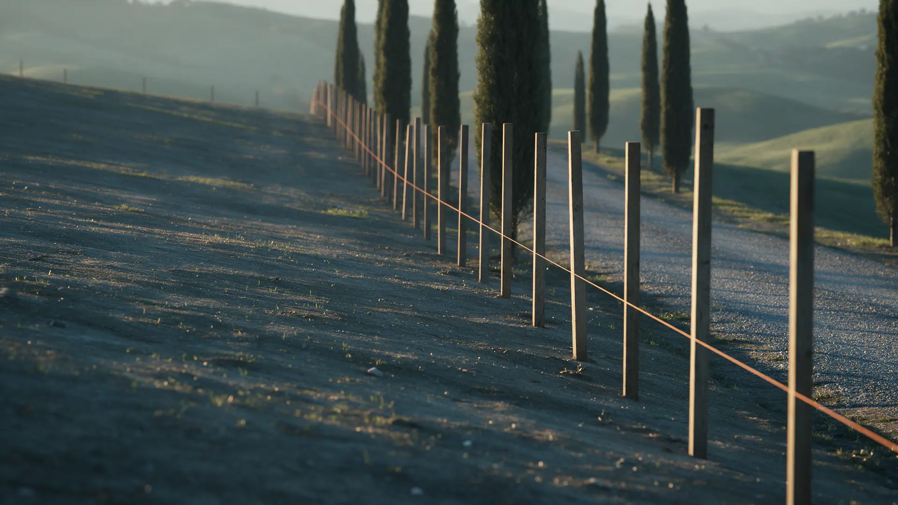

Участок {{номер}}
- Площадь
- {{площадь}} сот.
- Назначение земли
- {{назначение земли}}
- Коммуникации
- {{коммуникации}}
- Подъезд
- {{подъезд}}
- Цена
- {{цена}}

Площадь, назначение земли, коммуникации, подъезд и цена – по каждому участку, до звонка.
Получить подборку участковЧетыре вопроса, которые покупатель задаёт ещё до первого звонка. Ответы на них стоят в карточке участка, а не «по запросу».
Назначение земли и вид разрешённого использования указаны в карточке участка.
Подъезд и коммуникации названы по каждому участку: что есть на границе, а чего нет.
Документы по участку можно запросить до показа и спокойно прочитать вдвоём.
Цена стоит в карточке рядом с площадью. Разговор начинается с фактов.
Каждый – с площадью, назначением земли, коммуникациями, подъездом и ценой.
Пришлём участки, которые подходят вам, с теми же фактами и ценой.

Иллюстрация района. Карта района и расположение участков – {{карта}}.
Район и расстояния – фактами, а не словами «рядом с морем». Точные данные по каждому участку – в его карточке.

Выбираете участки из подборки и записываетесь на показ. На месте смотрите границы, подъезд и окружение.
Запрашиваете документы по участку – можно до показа. Проверяете назначение земли и права на участок: {{документы}}.
Цена и условия записываются в договоре. Читаете его до подписания, вдвоём и без спешки.
Подписываем договор и оформляем переход права на участок. Даты и условия: {{условия сделки}}.
Подбирает земельные участки в Сочи и сопровождает покупку от показа до сделки.
Опыт и специализация: {{опыт}}. Только факты, которые можно проверить.
Оставьте контакт – вернёмся с участками, у которых названы площадь, назначение земли, коммуникации, подъезд и цена.